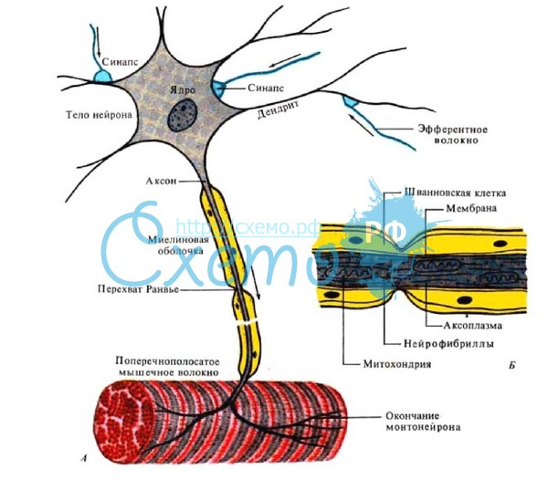
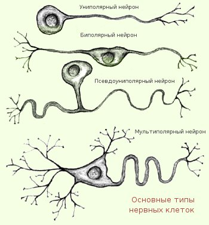

Нейроны, классификация и возрастные особенностиНейроны. Нервная система образована нервной тканью, в состав которой входят
специализированные нервные клетки – нейроны и клетки нейроглии.
Структурной и функциональной единицей нервной системы является нейрон (рис. 3.3.1). Рис. 3.3.1 А – строение нейрона, Б – строение нервного волокна (аксона)
Он состоит из тела (сомы) и отходящих от него отростков: аксона и дендритов. Каждая из этих частей нейрона выполняет определенную функцию.
Тело
нейрона покрыто
плазматической мембраной
и содержит
Нейрофибриллы
–
тонкие опорные структуры, проходят в теле
Аксон
–
тонкий длинный отросток, покрытый
миелиновой оболочкой.
Место отхождения аксона от тела называется
аксонным холмиком,
на протяжении 50–100 микрон он не имеет миелиновой Дендриты – короткие, толстые ветвящиеся отростки, отходящие в большом количестве от тела нейрона (похожи на ветви дерева). Тонкие разветвления дендритов имеют на своей поверхности шипики, на которых оканчиваются терминали аксонов сотен и тысяч нейронов. Функция дендритов – восприятие раздражений или нервных импульсов от других нейронов и проведение их к телу нейрона. Величина аксонов и дендритов, степень их ветвления в различных отделах ЦНС различна, наиболее сложное строение имеют нейроны мозжечка и коры головного мозга. Нейроны, выполняющие одинаковую функцию группируются, образуя ядра (ядра мозжечка, продолговатого, промежуточного мозга и др.). Каждое ядро содержит тысячи нейронов, тесно связанных между собой общей функцией. Некоторые нейроны содержат в нейроплазме пигменты, придающие им определенный цвет (красное ядро и черная субстанция в среднем мозге, голубое пятно варолиева моста). Классификация нейронов. Нейроны классифицируются по нескольким признакам: 1) по форме тела – звездчатые, веретенообразные, пирамидные и др.; 2) по локализации – центральные (расположены в ЦНС) и периферические (расположены вне ЦНС, а в спинномозговых, черепно-мозговых и вегетативных ганглиях, сплетениях, внутри органов); 3) по числу отростков – униполярные, биполярные и мультиполярные (рис. 3.3.2); 4) по функциональному признаку – рецепторные, эфферентные, вставочные.  Рис. 3.3.2
Рецепторные (афферентные, чувствительные) нейроны проводят возбуждение (нервные импульсы) от рецепторов в ЦНС. Тела этих нейронов расположены в спинальных ганглиях, от тела отходит один отросток, который Т-образно делится на две ветви: аксон и дендрит. Дендрит (ложный аксон) – длинный отросток, покрыт миелиновой оболочкой, отходит от тела на периферию, разветвляется, подходя к рецепторам.
Эфферентные
нейроны (командные по Павлову И.П.) проводят импульсы из ЦНС к
органам, эту функцию выполняют длинные аксоны нейронов (длина может
достигать 1,5 м.). Их тела располагаются
Вставочные
(контактные, интернейроны) нейроны – самая многочисленная группа,
которые воспринимают нервные импульсы
Возрастные особенности.
Нервная система формируется на 3-й неделе эмбрионального развития из
дорсальной части наружного зародышевого листка – эктодермы. На
ранних стадиях развития нейрон имеет большое ядро, окруженное
небольшим количеством нейроплазмы, затем оно постепенно уменьшается.
На 3-м месяце начинается рост аксона по направлению к периферии и
когда он достигает органа, тот начинает функционировать еще во
внутриутробном периоде. Дендриты вырастают позднее, начинают
функционировать после рождения. По мере роста и развития ребенка
увеличивается количество разветвлений
У
новорожденных количество нейронов больше, чем клеток нейроглии. С
возрастом количество глиальных клеток увеличивается С возрастом нейроны уменьшаются в размерах, в них уменьшается количество РНК, необходимой для синтеза белков и ферментов. Вернуться на главную |